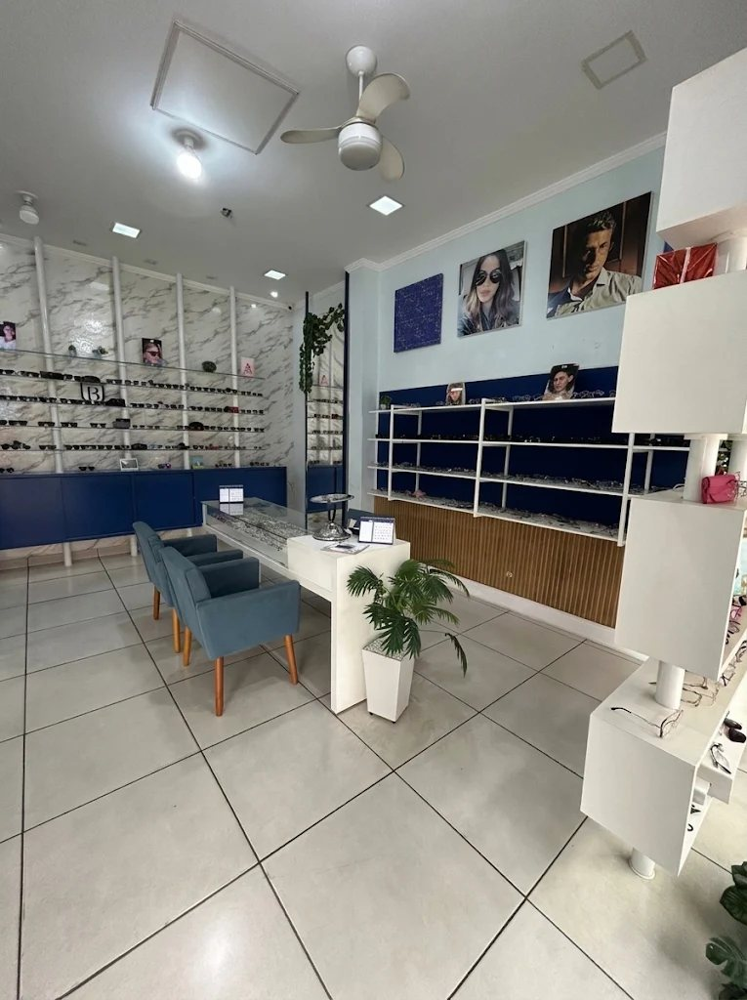
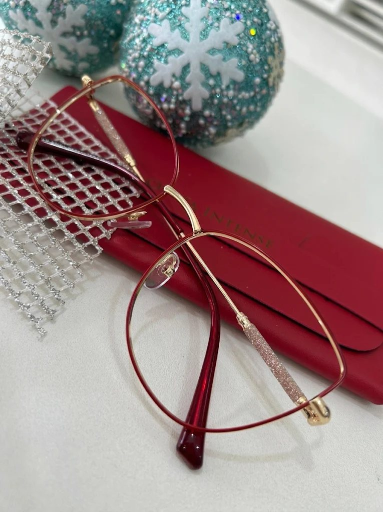
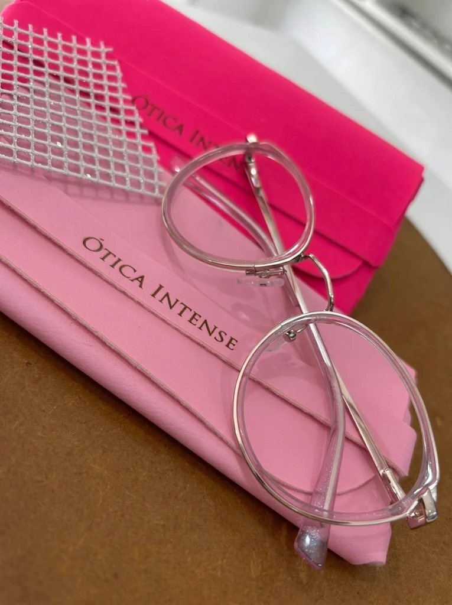

Rua da Ponte · Santa Rita do Sapucaí
Enxergue com intensidade.
Armações de grau e óculos de sol escolhidos com cuidado, para o seu rosto e o seu estilo.
A Ótica
Um lugar para escolher com calma, com quem entende do seu olhar.
Quem passa pela Ótica Intense destaca o atendimento atencioso, a variedade de armações e os preços justos. Aqui você é orientado a encontrar o modelo que combina com o seu rosto, seja de grau ou de sol.
- 5,0nota no Google
- 39avaliações de clientes
- Lojacompras, retirada na porta e entrega
- LGBTQ+empresa que acolhe a comunidade
A loja
Entre, fique à vontade.



O que dizem no Google
Nota 5,0 em 39 avaliações.
“Uso óculos há 23 anos e nunca fui tão bem atendido em uma ótica! As profissionais demonstraram experiência e me recomendaram os modelos de armação que mais combinam com o meu rosto.”
Resposta da loja: Sempre buscando o melhor para vocês! Fico muito feliz pela confiança que tem em nossa equipe.
“Ótimo atendimento, equipe atenciosa e sempre pronta para ajudar. Óculos de excelente qualidade, além de uma grande variedade de novidades e opções que agradam a todos os estilos.”
“Atendimento maravilhoso, são muito educadas. Preços incríveis, armações uma mais linda que a outra, super indico a loja para quem buscar preço justo.”
Resposta da loja: Muito obrigada!! Nossos clientes são os melhores.
Acompanhe as novidades da loja.
Lançamentos, armações novas e o dia a dia da Intense em @oticaintensesrs.
- 5.095seguidores
- 1.991seguindo
@oticaintensesrs
Abrir perfil no InstagramComo chegar
Na rua da Ponte, no Centro.
Rua Silvestre Ferraz, 239Centro · Santa Rita do Sapucaí - MG
CEP 37540-000
- Telefone / WhatsApp(35) 98864-4462
- Instagram@oticaintensesrs
- AtendimentoCompras na loja, retirada na porta e entrega